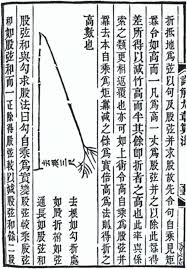

<!doctype html>
<html>

<head>
    <meta charset="utf-8">
    <meta name="viewport" content="width=device-width, initial-scale=1.0, maximum-scale=1.0, user-scalable=no">

    <title>As Mais Antigas Aplicações de Algebra Linear</title>

    <link rel="stylesheet" href="dist/reset.css">
    <link rel="stylesheet" href="dist/reveal.css">
    <link rel="stylesheet" href="dist/style.css">
    <link rel="stylesheet" href="dist/theme/black.css" id="theme">

    <!-- Theme used for syntax highlighted code -->
    <link rel="stylesheet" href="plugin/highlight/monokai.css" id="highlight-theme">
</head>

<body>
    <div class="reveal">
        <div class="slides">
            <section data-background-color="black">
                <div>
                    <h4 style="color: write;">As mais antigas aplicações da Álgebra Linear</h4>
                    <br>
                    
                </div>
            </section>

            <section data-background-color="white">
                <div>
                    <h4 style="color: black;">Etimologia: Álgebra</h4>
                    <p style="color: black; font-size: 25px; text-align: justify;">
                        - Al-jabr
                        <br> - Reunião de Partes Quebradas
                        <br> - Livro: Hisab al-jabr w'al-muqabalah
                        <br> - Bagdá, aproximadamente em 825 d.C.
                        <br> - Mohammed ibn-Musa al Khowarizmi
                        <br> - Transposição de quantidade subtraída de um lado da equação para o outro
                    </p>
                    
                    

                </div>
            </section>

            <section data-background-color="#78493F">
                <div>
                    <h4 style="color: white;">História</h4>
                    <p style="color: white; font-size: 25px; text-align: justify;">
                        - Egito e Babilônia
                        <br> - Sistema Numérico
                        <br> - Resolver problemas com variáveis desconhecidas
                        <br> - Auxiliar nas atividades ligadas a agricultura e engenharia
                        <br> - Com o passar do tempo houve interesse pelo estudo dessa ciência
                    </p>
                    
                    
                </div>
            </section>

            <section>
                <section data-background-color="#B09931">
                    <div>
                        <h4 style="color: white;">Egito</h4>
                        <p style="color: white; font-size: 25px; text-align: justify;">
                            - Sistema Numérico
                            <br> - Papiro de Rhind
                            <br> - Solução de 85 problemas matemáticos
                            <br> - Estimativa inicial seguida de uma correção final
                            <br> - Denominado posteriormente pelos europeus de Regra da Falsa Posição
                        </p>
                        
                        
                        
                    </div>
                </section>
                <section>
                    <h4 style="color: white;">Exemplo: Regra da Falsa Posição </h4>
                    <p style="color: white; font-size: 25px; text-align: justify;">
                        A idade de Ana, somada de outro tanto como ela, somada com a sua metade, com a sua terça parte e com a sua quarta parte, resulta em 148. Qual a idade de Ana?
                        <br><br>1º Passo: A escolha do número "falso". Neste caso escolheremos o valor 12 (suposta idade de Ana).
                        <br><br>2º Passo: Usando o número 12 e aplicando as operações indicadas, teremos: \[ 12 + 12 + 6 + 4 + 3 = 37\]
                        <br>3º Passo: Ajuste: Falso = 12 (idade) -> Resultado = 37 / Verdade = x (idade) -> Resultado = 148
                        <br>\[\frac{12}{x} = \frac{37}{148}\] \[x = \frac{12 \cdot 148}{37} = 48\] <strong style="color: red">Ana tem 48 anos</strong>
                    </p>
                </section>

                <section>
                    <h4 style="color: white;">Problema encontrado no Papiro de Rhind</h4>
                    <p style="color: white; font-size: 25px; text-align: justify;">
                        Um montão, sua metade, seus dois terços, todos juntos são 26. Diga-me quanto é esse montão?
                        <br><br>1º Passo: A escolha do número "falso". Neste caso escolheremos o valor 18 (suposta montão).
                        <br><br>2º Passo: Usando o número 18 e aplicando as operações indicadas, teremos: \[ 18 + 9 + 12 = 39\]
                        <br>3º Passo: Ajuste: Falso = 18 (idade) -> Resultado = 39 / Verdade = x (idade) -> Resultado = 26
                        <br>\[\frac{18}{x} = \frac{39}{26}\] \[x = \frac{18 \cdot 26}{39} = 12\] <strong style="color: red">O resultado do montão é 12</strong>
                    </p>
                </section>

            </section>

            <section>
                <section data-background-color="#DECF88">
                    <div>
                        <h4 style="color: white;">Babilônia</h4>
                        <p style="color: white; font-size: 25px; text-align: justify;">
                            - Sistema Numérico
                            <br> - Tabletes de Barro
                            <br> - Eficiência em operações aritméticas
                            <br> - Símbolos passam a denotar variáveis
                            <br> - Teorema de Pitágoras
                        </p>
                        
                        
                        
                    </div>
                </section>
                <section>
                    <h4 style="color: white;">Exemplo: Ca MLA 1950 </h4>
                    <p style="color: white; font-size: 20px; text-align: justify;">
                        Um trapézio com uma área de 320 unidades quadradas é cortado de um triângulo retângulo por uma reta paralela a um de seus lados. O outro lado mede 50 unidades de comprimento e a altura do trapézio é de 20 unidades. Quais são as larguras superior e inferior
                        do trapézio?
                        <br><br>Sejam x a largura inferior e y a largura superior do trapézio. A área do trapézio é sua altura vezes sua largura média, ou seja: \[\ 20 \cdot \frac{x+y}{2} = 320\] Usando semelhança de triângulos, também obtemos: \[\frac{x}{50}
                        = \frac{y}{30}\] A solução no tablete usa essas relações para gerar o sistema linear: \[\frac{1}{2}\cdot (x+y) = 16\] \[\frac{1}{2}\cdot (x-y) = 4\]
                        <strong style="color: red">Somando e subtraindo essas duas equações, obtemos a solução: x = 20 e y = 12</strong>
                    </p>
                </section>
            </section>

            <section>
                <section data-background-color="#E51135">
                    <div>
                        <h4 style=" color: white; ">China</h4>
                        <p style="color: white; font-size: 25px; text-align: justify; ">
                            - Chiu Chang Suan Shu ou "Os Nove Capítulos da Arte Matemática"
                            <br> - 246 problemas e suas soluções
                            <br> - A Maneira de Calcular Usando Flechas
                            <br> - 178 problemas
                            <br> - Técnica de Eliminação Gaussiana
                        </p>
                        
                        
                        
                    </div>
                </section>
                <section>
                    <h4 style="color: white; ">Exemplo: Primeiro problema do oitavo capítulo</h4>
                    <p style="color: white; font-size: 20px; text-align: justify; ">
                        Há três classes de milho, sendo que três sacos da primeira classe, dois da segunda classe e um da terceira totalizam 39 medidas. Dois da primeira, três da segunda e um da terceira totalizam 34 medidas. E um da primeira, dois da segunda e três da terceira
                        totalizam 26 medidas. Quantas medidas do grão tem cada saco de cada classe?
                        <br><br>Sejam x, y e z as medidas da primeira, segunda e terceira classe de milho. Então as condições do problema levam ao sistema linear de três equações em três incógnitas seguinte:
                        <br><br>\[3x + 2y + z = 39\] \[2x + 3y + z = 34\] \[x+ 2y + 3z = 26\]
                        <br><br><strong style="color: red ">Continuação...</strong>
                    </p>
                </section>

                <section>
                    <h4 style="color: white; ">Exemplo: Primeiro problema do oitavo capítulo</h4>
                    <p style="color: white; font-size: 20px; text-align: justify; ">
                        A solução descrita no tratado representava os coeficientes de cada equação por um número apropriado de varas colocadas dentro de quadrados numa tabela de contas. Os coeficientes positivos eram representados por varas pretas, os coeficientes negativos
                        eram representados por varas vermelhas e os quadrados correspondentes a coeficientes nulos eram deixados vazios. A tabela de contas ficava disposta de tal modo que os coeficientes de cada equação apareciam em colunas, com a primeira
                        equação na coluna mais à direita:
                        <br><br> \[\begin{vmatrix} \mathbf{1} &amp; \mathbf{2} &amp; \mathbf{3} \\ \mathbf{2} &amp; \mathbf{3} &amp; \mathbf{2} \\ \mathbf{3} &amp; \mathbf{1} &amp; \mathbf{1} \\ \mathbf{26} &amp; \mathbf{34} &amp; \mathbf{39} \\ \end{vmatrix}
                        \]
                        <br><br> <strong style="color: red ">Continuação...</strong>
                    </p>
                </section>

                <section>
                    <h4 style="color: white; ">Exemplo: Primeiro problema do oitavo capítulo</h4>
                    <p style="color: white; font-size: 20px; text-align: justify; ">
                        Em seguida, o número de varas dentro dos quadrados eram ajustados com o objetivo de executar os dois passos seguintes: (1) duas vezes os números da terceira coluna eram subtraídos de três vezes os números da segunda coluna, e (2) os números da terceira
                        coluna eram subtraídos de três vezes os números da primeira coluna. O resultado era a tabela seguinte:
                        <br><br> \[\begin{vmatrix} \mathbf{ } &amp; \mathbf{ } &amp; \mathbf{3} \\ \mathbf{4} &amp; \mathbf{5} &amp; \mathbf{2} \\ \mathbf{8} &amp; \mathbf{1} &amp; \mathbf{1} \\ \mathbf{39} &amp; \mathbf{24} &amp; \mathbf{39} \\ \end{vmatrix}\]
                        <br><br><strong style="color: red ">Continuação...</strong>
                    </p>
                </section>

                <section>
                    <h4 style="color: white; ">Exemplo: Primeiro problema do oitavo capítulo</h4>
                    <p style="color: white; font-size: 20px; text-align: justify; ">
                        Nesta tabela, quatro vezes os números da segunda coluna eram subtraídos de cinco vezes os números da primeira coluna, fornecendo:
                        <br><br> \[\begin{vmatrix} \mathbf{ } &amp; \mathbf{ } &amp; \mathbf{3} \\ \mathbf{ } &amp; \mathbf{5} &amp; \mathbf{2} \\ \mathbf{36} &amp; \mathbf{1} &amp; \mathbf{1} \\ \mathbf{99} &amp; \mathbf{24} &amp; \mathbf{39} \\ \end{vmatrix}\]
                        <br><br><strong style="color: red ">Continuação...</strong>
                    </p>
                </section>

                <section>
                    <h4 style="color: white; ">Exemplo: Primeiro problema do oitavo capítulo</h4>
                    <p style="color: white; font-size: 20px; text-align: justify; ">
                        <br>Essa última tabela é equivalente ao sistema linear: \[3x + 2y + z = 39\] \[5y + z = 24\] \[36z = 99\]
                        <br>Esse sistema triangular era resolvido por um método equivalente à retrossubstituição para obter: \[x = \frac{37}{4}\] \[y = \frac{17}{4}\] \[z = \frac{11}{4}\]
                    </p>
                </section>

            </section>

            <section>
                <section data-background-color="#307CD6">
                    <div>
                        <h4 style="color: white;">Grécia</h4>
                        <p style="color: white; font-size: 25px; text-align: justify;">
                            - Problema da Manada
                            <br> - Arquimedes
                            <br> - Eratóstenes
                            <br> - 8 Variáveis
                        </p>
                        
                        
                        
                    </div>
                </section>
                <section>
                    <h4 style="color: white;">Exemplo: Problema da Manada </h4>
                    <p style="color: white; font-size: 20px; text-align: justify;">
                        Não se sabe até hoje como, nem mesmo se, algum desses dois geômetras o resolveu.
                        <br><br>Se fores diligente e sábio, ó estranho, calcula o número de bovinos do deus Sol que há muito tempo pastavam nos campos da ilha triangular da Sicília, divididos em quatro manadas de cores diferentes: uma branca como o leite,
                        outra preta brilhante, uma terceira amarela e a quarta malhada. Em cada manada, havia touros em grande número, de acordo com estas proporções. Entenda, ó estranho, que o número de touros brancos era igual à metade e um terço do
                        número de pretos, somados a todos os amarelos, enquanto o número de pretos era igual a um quarto e um quinto dos malhados, juntamente com todos os amarelos. Saiba ainda que o número dos demais touros, os malhados, era igual a um
                        sexto e um sétimo dos brancos, somados a todos os amarelos. As proporções das vacas eram as seguintes: o número de vacas brancas era precisamente igual a um terço e um quarto de todas as pretas, enquanto o número de pretas era
                        igual a um quarto e um quinto das malhadas quando todos, inclusive os touros, iam pastar juntos. Agora, o número de malhadas, dividido em quatro partes, era igual a um quinto e um sexto do número de vacas amarelas. Finalmente,
                        o número de amarelas era igual a um sexto e um sétimo do número de brancas. Se não conseguires dizer com precisão, ó estranho, o número de bovinos do deus Sol, dando separadamente o número dos bem alimentados touros e o de vacas
                        de acordo com cada cor, não serás chamado de inapto ou de ignorante com números, mas também não serás ainda contado entre os sábios.
                        <br><br><strong style="color: red ">Continuação...</strong>
                    </p>
                </section>

                <section>
                    <h4 style="color: white;">Exemplo: Problema da Manada </h4>
                    <p style="color: white; font-size: 20px; text-align: justify;">
                        <br>A notação convencional (em inglês) para as oito variáveis desse problema é:
                        <br><br>W = número de touros brancos
                        <br>B = número de touros pretos
                        <br>Y = número de touros amarelos
                        <br>D = número de touros malhados
                        <br>w = número de vacas brancas
                        <br>b = número de vacas pretas
                        <br>y = número de vacas amarelas
                        <br>d = número de vacas malhadas
                        <br><br><strong style="color: red ">Continuação...</strong>
                    </p>
                </section>

                <section>
                    <h4 style="color: white;">Exemplo: Problema da Manada </h4>
                    <p style="color: white; font-size: 18px; text-align: justify;">
                        <br>O problema pode, agora, ser enunciado como as sete equações homogêneas em oito incógnitas seguintes:
                        <br><br>\[ 1: W = (\frac{1}{2} + \frac{1}{3}) \cdot B + Y\] (Os touros brancos se igualavam a uma metade e um terço dos touros pretos, junto com a totalidade dos touros amarelos.) \[ 2: B = (\frac{1}{4} + \frac{1}{5}) \cdot D +
                        Y\] (Os touros pretos se igualavam a uma quarta parte dos touros malhados e um quinto, novamente junto com a totalidade dos touros amarelos.) \[ 3: D = (\frac{1}{6} + \frac{1}{7}) \cdot W + Y\] (Os demais touros, os malhados, se
                        igualavam a uma sexta parte dos touros brancos e um sétimo, junto com a totalidade dos touros amarelos.) \[ 4: w = (\frac{1}{3} + \frac{1}{4}) \cdot B + b\] (As vacas brancas eram precisamente iguais a uma terça parte e um quarto
                        da totalidade das pretas.)

                        <br><br><strong style="color: red ">Continuação...</strong>
                    </p>
                </section>
                <section>
                    <h4 style="color: white;">Exemplo: Problema da Manada </h4>
                    <p style="color: white; font-size: 18px; text-align: justify;">
                        <br> \[ 5: b = (\frac{1}{4} + \frac{1}{5}) \cdot D + d\] (As vacas pretas se igualavam a uma quarta parte novamente das malhadas e com elas, uma quinta parte quando todos, inclusive os touros, iam pastar.) \[ 6: d = (\frac{1}{5}
                        + \frac{1}{6}) \cdot Y + y\] (As vacas malhadas em quatro partes ou seja, em sua totalidade se igualavam em número a uma quinta parte e um sexto da manada amarela.) \[ 7: y = (\frac{1}{6} + \frac{1}{7}) \cdot W + w\] (As vacas
                        amarelas se igualavam em número a uma sexta parte e um sétimo da manada branca.)

                        <br><br><strong style="color: red ">Continuação...</strong>
                    </p>
                </section>

                <section>
                    <h4 style="color: white; ">Exemplo: Problema da Manada</h4>
                    <p style="color: white; font-size: 20px; text-align: center; ">
                        <br>Como pedimos para o leitor verificar nos exercícios, esse sistema tem uma infinidade de soluções da forma:
                        <br><br> W = 10.366.482k
                        <br><br> B = 7.460.514k
                        <br><br> Y = 4.149.387k
                        <br><br> D = 7.358.060k
                        <br><br> w = 7.206.360k
                        <br><br> b = 4.893.246k
                        <br><br> y = 5.439.213k
                        <br><br> d = 3.515.820k
                        <br><br> Em que k é um número real qualquer. Os valores k 1, 2, ... dão uma infinidade de soluções inteiras positivas do problema, sendo que k 1 dá a menor solução.
                    </p>
                </section>
            </section>

            <section>
                <section data-background-color="#2B6C21">
                    <div>
                        <h4 style="color: white;">Índia</h4>
                        <p style="color: white; font-size: 25px; text-align: justify;">
                            - Manuscrito Bakhshali
                            <br> - Século IV
                            <br> - 70 folhas de casca de árvore
                            <br> - Equiparação
                        </p>
                        
                        
                    </div>
                </section>

                <section>
                    <h4 style="color: white; ">Exemplo: Problema do Manuscrito Bakhshali</h4>
                    <p style="color: white; font-size: 20px; text-align: justify; ">
                        <br>Um mercador possui sete cavalos da raça asava, um segundo possui nove cavalos da raça hoya e um terceiro tem dez camelos. Eles se equiparam nos valores de seus animais se cada um ceder dois animais, um para cada um dos outros.
                        Encontre o preço de cada animal e o valor total dos animais de cada mercador.
                        <br><br> Sejam x o preço de um cavalo asava, y o preço de um cavalo haya, z o preço de um camelo e K o valor total equiparado dos animais de cada mercador. Então as condições do problema levam ao sistema de equações seguinte.
                        <br>\[5x + y + z = K\] \[x + 7y + z = K\] \[x + y + 8z = K\]
                        <br>O método de resolução descrito no manuscrito começa subtraindo a quantidade (x y z) de ambos lados das três equações para obter 4x 6y 7z K  (x y z). Isso mostra que, se os preços x, y e z forem inteiros, então a quantidade
                        K  (x y z) deve ser um inteiro que seja divisível por 4, 6 e 7. O manuscrito toma o produto desses números, ou seja, 168, para o valor de K  (x y z), que fornece x 42, y 28 e z 24 para os preços e K 262 para o valor equiparado.
                    </p>
                </section>

            </section>
        </div>
    </div>

    <script src="dist/reveal.js "></script>
    <script src="plugin/notes/notes.js "></script>
    <script src="plugin/markdown/markdown.js "></script>
    <script src="plugin/highlight/highlight.js "></script>
    <script src="plugin/math/math.js "></script>

    <script>
        // More info about initialization & config:
        // - https://revealjs.com/initialization/
        // - https://revealjs.com/config/
        Reveal.initialize({
            hash: true,
            history: true,
            transition: 'linear',

            math: {
                // mathjax: 'https://cdnjs.cloudflare.com/ajax/libs/mathjax/2.7.0/MathJax.js',
                config: 'TeX-AMS_HTML-full',
                TeX: {
                    Macros: {
                        R: '\\mathbb{R}',
                        set: ['\\left\\{#1 \\; ; \\; #2\\right\\}', 2]
                    }
                }
            },

            // Learn about plugins: https://revealjs.com/plugins/
            plugins: [RevealMarkdown, RevealHighlight, RevealNotes, RevealMath]
        });
    </script>
</body>

</html>